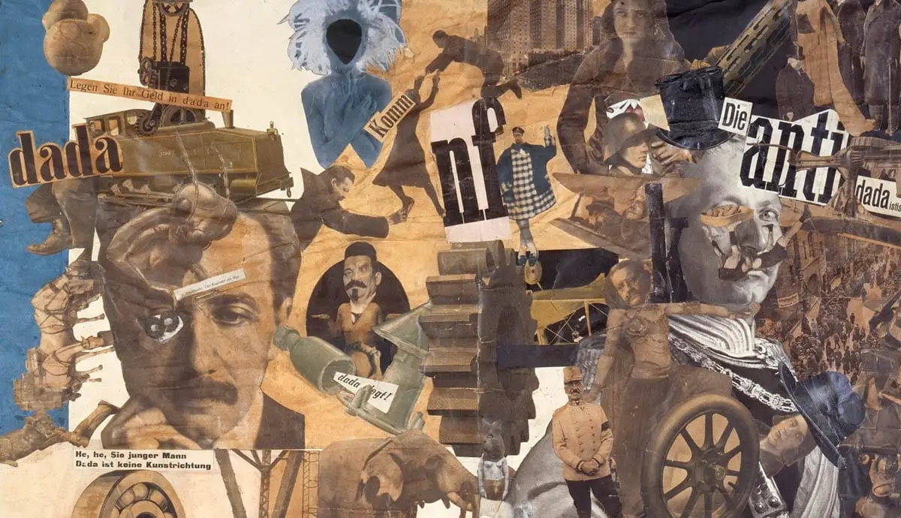

Ontdek de kracht van kunst als een katalysator voor sociale verandering. Verken projecten en
kunstwerken die
maatschappelijke kwesties belichten en een blijvende impact hebben op onze samenleving. Laat je
inspireren
door kunst die een stem geeft aan degenen die gehoord moeten worden.
Achtergrondverhalen
Verhalen achter kunstwerken die sociale verandering hebben beïnvloed.
Raphael - "School of Athens" (Scuola di Atene, c. 1509-1511)
Verhaal: "School of Athens" is een van de vier fresco's die Raphael schilderde in de Apostolische
Paleizen in het Vaticaan. Het schilderij toont een groep van filosofen, geleerden en denkers uit de
Oudheid die samenkomen in een architecturaal meesterwerk dat lijkt op een klassieke Romeinse
basiliek. De centrale figuren zijn Plato en Aristoteles, die respectievelijk idealisme en realisme
vertegenwoordigen in de filosofie.
Dit schilderij is een meesterwerk van de Renaissancekunst en dient als een eerbetoon aan de grote
denkers van de oudheid. Het kan worden geïnterpreteerd als een symbool van intellectuele vooruitgang
en de zoektocht naar kennis, wat een cruciaal aspect is van sociale verandering. Het benadrukt het
belang van onderwijs, filosofie en het delen van ideeën in de ontwikkeling van de samenleving.
Het schilderij "School of Athens" kan worden toegevoegd aan de "Kunst en Sociale Verandering" pagina
om te laten zien hoe kunst kan bijdragen aan het verspreiden van ideeën en het bevorderen van
intellectuele en sociale vooruitgang.
Eugène Delacroix - "Liberty Leading the People" (La Liberté guidant le peuple, 1830)
Verhaal: "Liberty Leading the People" is een iconisch schilderij van de Franse kunstenaar Eugène
Delacroix. Het toont een allegorische voorstelling van vrijheid die het Franse volk leidt tijdens de
Julirevolutie van 1830. De centrale figuur, gekleed in een driekleurige vlag en een Phrygische muts,
symboliseert de idealen van vrijheid en republiek.
Dit schilderij wordt beschouwd als een symbool van revolutionaire geest en het verlangen naar
vrijheid en sociale verandering. Het vangt de energie en vastberadenheid van het volk op een
cruciaal moment in de geschiedenis van Frankrijk. Delacroix' gebruik van levendige kleuren en
dramatische composities draagt bij aan de krachtige impact van het werk.
Hannah Höch - "Cut with the Kitchen Knife Dada Through the Last Weimar Beer-Belly Cultural Epoch of
Germany" (1919-1920)
Verhaal: Hannah Höch was een prominente Dada-kunstenaar en een pionier in de fotomontage. Haar werk
"Cut with the Kitchen Knife Dada Through the Last Weimar Beer-Belly Cultural Epoch of Germany" is
een krachtige visuele uitdrukking van de sociale en politieke veranderingen in het Duitsland van de
Weimar-republiek.
De fotomontage toont een chaotische en kleurrijke collage van beelden, waaronder politieke figuren,
kunstenaars, entertainers en alledaagse mensen. Het symboliseert de turbulente periode na de Eerste
Wereldoorlog, waarin Duitsland een ingrijpende transformatie doormaakte. Höch gebruikte deze collage
om commentaar te leveren op genderongelijkheid, politieke spanningen en de rol van vrouwen in de
samenleving.
"Cut with the Kitchen Knife Dada" is een meesterwerk van Dada-kunst dat de sociale veranderingen en
de tumultueuze tijdgeest van het interbellum in Duitsland weergeeft.


